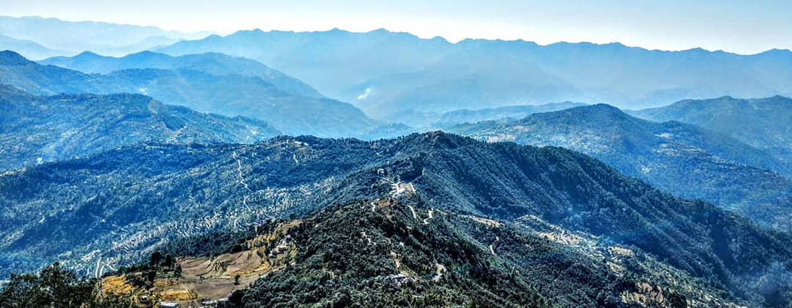
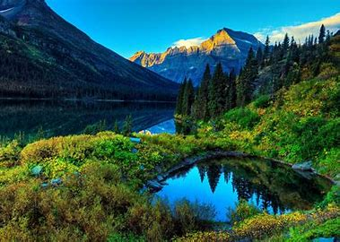

Devi Darshan Trek
Destinations:Chandrabadni, Chamba-Surkanda Devi, Dhanaulti, Kunjapuri
Duration: 3 Days
Experience: Trekking and Hiking
START
DAY 1

RISHIKESH TO CHANDRABADNI
Enjoy the scenic drive to Chandrabadni while traveling through the green environs of Devprayag with a packed lunch. Trek your way to the Chandrabadni temple and enjoy the all-embracing mystique of the Himalayan Range. Trek your way back to the city and enjoy an overnight stay at the camp.
DAY 2
.jpeg)
CHANDRABADNI TO KADDUKHAL
After waking up, set off to Kaddukhal packed with a hearty lunch. Upon reaching, you can explore the city before embarking upon a 3 km trek to Surkanda Devi. As you reach the top, you will be elated with the sight of nature at its finest. In the evening, trek back to Kaddukhal. Enjoy a 7km drive to Dhanaulti for an overnight stay.
DAY 3

DRIVE TO KUNJAPURI AND RISHIKESH
Wake up and enjoy the hidden gems of Dhanaulti before driving to Hindolakhal. The 64 kms drive is filled with breathtaking views and the serene beauty of the Himalayas. Spend some time wandering in the lush green surroundings before heading for Kunjapuri with a packed lunch. Trek your way to the Kunjapuri temple and soak in the view of the beautiful Himalayan peaks. In the afternoon, head back to Rishikesh where the tour concludes.
END